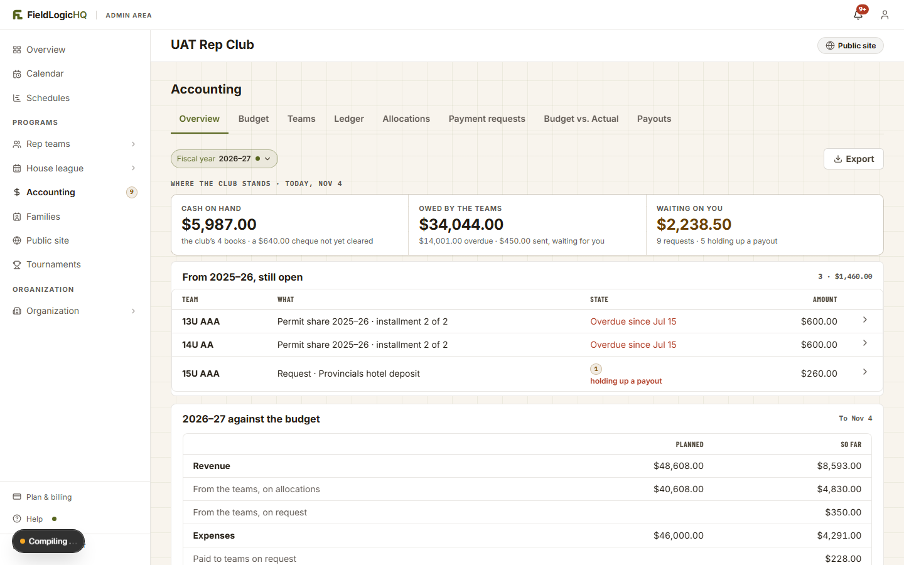
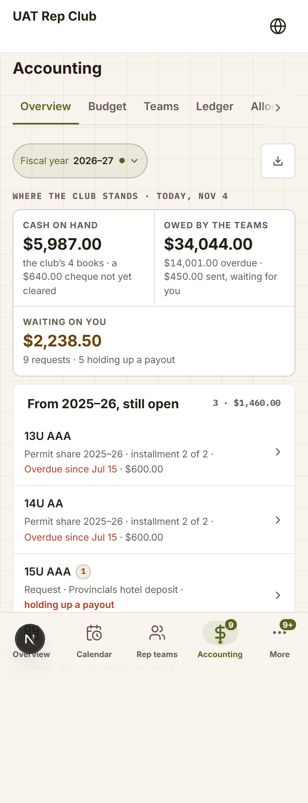
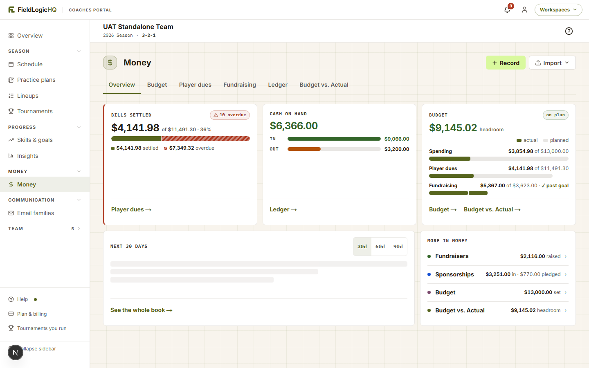
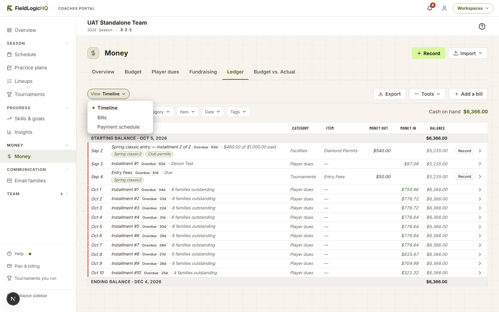

Bank reconciliation · both portals · R0 drawings · 2026-11-04 · round 1
Checking the books against the bank
A club treasurer, or a team’s coach or treasurer, sits down with a bank statement, ticks off what the bank shows, reaches a difference of $0.00, and marks the statement checked. The twelve asks were ruled on 2026-11-04 (all A). This page draws option A of each, exactly as ruled. Where drawing it raised a choice the rulings didn’t make, the choice is on the last tab with a recommendation. Two of them push back on a ruling once it is on screen (Asks 12 and 1). Every word on a screen is a draft for /marketing. Every figure comes from one example statement per portal, and tab 2 shows the sums.
Does anything get noisier? The whole screen, today and with this feature
Tabs 2–9 draw the desktop chrome simplified (no sidebar icons, notification bell or footer links); this tab shows the real chrome. Windows follow the shipped rule on a phone: a question stays a small card, a form goes full screen. Each “today” is a capture of the dev site (Nov 4, 2026, Warm theme, 1440 × 900 at true size). Each “with this feature” is the same capture with only the changes drawn on top, in place, so nothing else can drift. The dark badge at the bottom left of some captures is the dev server’s, not the product’s. The captures use the dev fixtures’ names and figures (“UAT Rep Club”, “UAT Standalone Team”). The rest of this page uses the example clubs.
Club Accounting
One tab is added after Ledger. One line goes on the right of the existing “Where the club stands” row. No row is added at rest, and the band is untouched.
Coach Money Overview
One line in the empty foot of the Cash on hand card. No card grows.
Coach Ledger
One more option inside the View dropdown. At rest, the Ledger is identical.
View
Club · Accounting → Overview
Today · capture

Today’s capture · hidden while showing only what differs
With this feature · the same capture, changes drawn in place
OverviewBudgetTeamsLedgerBankAllocationsPayment requestsBudget vs. ActualPayouts
Bank: Club chequing checked through Oct 31, 2026›
Today · phone capture

With this feature · phone, the top of the Overview
UAT Rep Club◍
Accounting
OverviewBudgetTeamsLedgerBa…›
Fiscal year2026–27 ●⤓
Where the club stands · today, Nov 4
Bank checked through Oct 31, 2026›
Cash on hand$5,987.00the club’s 4 books · a $640.00 cheque not yet cleared
Owed by the teams$34,044.00$14,001.00 overdue
Waiting on you$2,238.509 requests · 5 holding up a payout
OverviewCalendarRep teamsAccountingMore
The one place it costs height
On a phone the eyebrow row fills the width, so the bank line takes a 44px row of its own under it (the whole row is the link). That pushes the band down by one row. The alternative is to put it in the Cash on hand tile’s caption, but that caption already wraps to three lines on a phone.
The tab row on a phone
“Bank” comes after Ledger, so on first load it sits just past the visible edge, behind the shipped scroll arrow. The row scrolls to the active tab, so on the Bank tab itself it is in view.
Coach · Money → Overview
Today · capture

Today’s capture · hidden while showing only what differs
With this feature · one line in the Cash on hand card
Bank checked through Oct 31, 2026›
Coach · Money → Ledger, with the View dropdown open
Today · capture

Today’s capture · hidden while showing only what differs
With this feature · a fourth option
Timeline
Bills
Payment schedule
Bank
Setting up: the first visit (C1, K1) and starting a statement
B1: the club checks a bank account it names; every club book is in the first account by default; a team has one account. B3: the first check asks for a starting date, the bank balance on that date, and anything still outstanding then. After that, each statement starts where the last one ended, and nobody types a starting balance again.
The two example statements every figure on this page comes from
Club · Lakeshore Lynx · Club chequing · statement ending Oct 31, 2026
Money in ticked: 14 lines, one of them a Stripe payout of $1,284.50
+ $3,910.00
Money out ticked: 9 lines
− $1,617.55
Ticked balance
$8,412.90
The statement’s ending balance
$8,400.50
Off by (the bank’s monthly fee, not yet in the book: tab 4)
$12.40
After the fee is added and ticked
$8,400.50 · $0.00
Kept out of the bank: officials paid in cash from the concession float, Oct 27
$120.00 out
Still outstanding: cheque #214, indoor training, written Oct 29
$450.00
The review page’s worked example, with one change: the bank charged a $12.40 fee the book didn’t have. The plan’s C3 question (“It’s $12.40 off. Now what?”) needed a real reason to be off.
Coach · Lynx 12U AAA · Team account · statement ending Sep 30, 2026 (the team’s first check)
Bank balance on Sep 1, 2026 (typed once, K1)
$1,180.00
Money in ticked: 5 lines
+ $2,462.35
Money out ticked: 2 lines, then the bank’s $4.95 fee (tab 4)
− $1,138.15
Ticked balance = the statement
$2,504.20 · $0.00
Kept out of the bank: dues paid in cash, spent in cash on officials
$120.00 in · $120.00 out
Left out automatically: the Okafor family paid the hotel directly
$160.00
Still outstanding: cheque #032, hotel deposit, written Sep 28
$500.00
On Sep 30, 2026 the Money Overview’s Cash on hand read $2,064.20. That is $60.00 more than the bank less the outstanding cheque ($2,004.20). The $60.00 is the cash the team held when the season opened with $1,240.00 (P2: Cash on hand is not a bank balance). The figures agree. They are two different numbers.
C1 · Club: the Bank tab, first visit · desktop
Proposed · Accounting → Bank, before anything is set up
FieldLogicHQAdmin area
Lakeshore LynxPublic site
Accounting
OverviewBudgetTeamsLedgerBankAllocationsPayment requestsBudget vs. ActualPayouts
Check the club’s books against the bank
Name the bank account and say where to start. After this, each statement starts where the last one ended.
Account name *
Club chequing
A name only. Never the account number.
Books whose money is in this account
General
$5,147.10
House league · Fall 2026
$495.00
Lynx Fall Classic 2026
$0.00
All of the club’s books, to start. You can add a second account later and move a book to it. Teams keep their own accounts.
Starting date *
Aug 31, 2026
Usually the end date of a statement you already have.
Bank balance on that date *
$5,402.10
From that statement’s ending balance.
Still outstanding on Aug 31, 2026
Date
What
Book
Money out
Money in
Aug 29
Cheque #201 · Officials, Aug 29–30
General
$240.00
Aug 27
Concession supplies
General
$96.20
Aug 24
Sponsor · Lakeside Dental
General
$300.00
Lines from your books dated in the 30 days before the starting date. Tick any the bank hadn’t shown by Aug 31. Add one the books don’t have
Save and check a statement
Proposed · the window that starts every statement after the first · both portals
Bank · Club chequingCheck a statement
✕
Starts at $6,120.45, where the statement ending Sep 30, 2026 ended.
Statement ends *
Oct 31, 2026
Ending balance on the statement *
$8,400.50
Both are printed on the statement, usually at the top.
CancelStart checking
Proposed · C1 · phone
Lakeshore Lynx◍
Accounting
TeamsLedgerBankAllocationsPayme…
Check the club’s books against the bank
Account name *
Club chequing
Books whose money is in this account
All 3 club books
Starting date *
Aug 31, 2026
Bank balance on that date *
$5,402.10
Still outstanding on Aug 31, 2026
Cheque #201 · Officials
Aug 29 · General
$240.00
Concession supplies
Aug 27 · General
$96.20
Add one the books don’t have
Save and check a statement
OverviewCalendarRep teamsAccountingMore
What it answers
“I’ve never done this here. Where do I start?” One card with five answers, all from a statement the treasurer already holds. On the phone the book list folds into the shipped pick-many dropdown (“All 3 club books”), because a phone has no room for a second list.
Drawn, not decided
Where the outstanding lines come from (Ask 3). Drawn as a list from the club’s own books, since a club already using FieldLogicHQ has those cheques in its books. Typing them again would make a duplicate.
K1 · Coach: the first check, in the Ledger’s Bank view
B8: a fourth Ledger view, “Bank”. Correction to the drawing prompt: the Ledger’s view control ships as the View pill dropdown (Timeline · Bills · Payment schedule), not a white track. The white track is the calendar and Roster switch. So “Bank” is a fourth option in that dropdown, drawn here open.
Proposed · Money → Ledger → View: Bank, first visit, a team with a carried opening balance
FieldLogicHQCoaches portalWorkspaces ▾
Lynx 12U AAA
2026 Season
$
Money
+ RecordImport ▾
OverviewBudgetPlayer duesFundraisingLedgerClubBudget vs. Actual
ViewBank
Timeline
Bills
Payment schedule
Bank
Check the team’s account against the bank
Say where to start, once. After this, each statement starts where the last one ended, even into next season.
Account name *
Team account
A name only. Never the account number.
Starting date *
Sep 1, 2026
The 2026 Season started Sep 1, 2026.
Bank balance on that date *
$1,180.00
i
The season opened with $1,240.00 carried from the 2025 Season.That figure is cash and bank together, so the bank’s balance can be lower. Type what the bank showed.
Still outstanding on Sep 1, 2026
Nothing in the team’s Ledger is dated before Sep 1, 2026. Add one the Ledger doesn’t have
Save and check a statement
View
Proposed · K1, a team with a carried opening balance
Account name *
Team account
Starting date *
Sep 1, 2026
Bank balance on that date *
$1,180.00
Name, starting date, bank balance · the same
i
The season opened with $1,240.00 carried from the 2025 Season.That figure is cash and bank together, so the bank’s balance can be lower. Type what the bank showed.
Proposed · K1, a team in its first season (no opening balance)
Account name *
Team account
Starting date *
Sep 1, 2026
Bank balance on that date *
$0.00
Name · the same
No carried-balance note
Proposed · K1 · phone
←Money
Player duesFundraisingLedgerClub
ViewBank
Check the team’s account against the bank
Account name *
Team account
Starting date *
Sep 1, 2026
Bank balance on that date *
$1,180.00
i
The season opened with $1,240.00 carried from the 2025 Season.That’s cash and bank together, so the bank’s balance can be lower.
Add something still outstandingSave and check a statement
OverviewSchedulePracticesRosterMore
Ticking a statement (C2, K2)
B2: the statement is typed (end date and ending balance) and each line is ticked off. An automatic Stripe payout is one row that ticks everything inside it. B6: one tap marks a line “Didn’t go through the bank”, and a small total keeps count. Same-account transfers, bills a family paid straight to the vendor, and void and pending lines are left out automatically. The band is the shipped money band, three tiles joined: Statement · Ticked · Difference.
C2 · Club: an open check, part-way through · desktop
Proposed · 18 of 25 lines ticked
FieldLogicHQAdmin area
Lakeshore LynxPublic site
Accounting
OverviewBudgetTeamsLedgerBankAllocationsPayment requestsBudget vs. ActualPayouts
Club chequing · checking
Statement ending Oct 31, 2026 Edit
Finish laterMark this statement checked
Statement$8,400.50Ending balance on Oct 31, 2026
Ticked$8,542.65From $6,120.45 · 18 of 25 lines ticked
Difference$142.15You’ve ticked $142.15 more than the statement shows
Find an amount or a name…Show: All lines3 lines left out automatically · Show
Date
What
Book
Money out
Money in
Starting balance · Sep 30, 2026 (where the last check ended)
$6,120.45
Oct 1
Cheque #209 · Facility rental, fall
General
$420.00
Oct 2
Sponsor · Lakeside Dental · E-Transfer
General
$400.00
Oct 3
Fall registration · Patel · cheque
House league · Fall 2026
$225.00
Oct 4
Concession supplies · debit
General
$186.42
Oct 5
Concession, Oct 4 · cash deposit
General
$312.75
Oct 7
Cheque #210 · Officials, Oct 5–6
House league · Fall 2026
$240.00
Oct 8
Stripe payout· 8 lines inside · arrived Oct 8›
2 books
$1,284.50
Oct 9
Fall registration · Nguyen · E-Transfer
House league · Fall 2026
$225.00
Oct 10
Equipment repair · E-Transfer
General
$95.00
Oct 12
Concession, Oct 11 · cash deposit
General
$268.25
Oct 14
Fall registration · Okafor · E-Transfer
House league · Fall 2026
$225.00
Oct 15
Cheque #211 · Officials, Oct 12–13
House league · Fall 2026
$240.00
Oct 16
Team entry · Ridgeview Hawks · cheque
Lynx Fall Classic 2026
$350.00
Oct 18
Concession supplies · debit
General
$143.88
Oct 19
Bake sale · cash deposit
General
$184.50
Oct 21
Fall registration · Brooks, 1 of 2 · E-Transfer
House league · Fall 2026
$112.50
Oct 22
Cheque #212 · Trophies
Lynx Fall Classic 2026
$212.25
Oct 24
Equipment sale · E-Transfer
General
$60.00
Oct 25
Refund · Fall registration · Singh · E-Transfer
House league · Fall 2026
$60.00
Oct 26
Sponsor · Cedar Lake Auto Glass · cheque
General
$100.00
Oct 27
Officials, Oct 26–27 · cash, from the concession float
House league · Fall 2026
$120.00
Didn’t go through the bank
Oct 28
Fall registration · Marchetti, 1 of 4 · E-Transfer
House league · Fall 2026
$62.50
Oct 29
Printer ink, registration desk · debit
General
$20.00
Oct 29
Cheque #214 · Indoor training, November
General
$450.00
Oct 30
Fall registration · Chen, 1 of 2 · E-Transfer
House league · Fall 2026
$100.00
Ticks save as you go. Lines dated after Oct 31, 2026 wait for the next statement.
The Stripe payout row, opened · and the state if a payout doesn’t add up
Drawn at the list’s true width. Tab 3’s sidebar and tab row are unchanged and not repeated. The payout reuses the Payouts tab’s reader, so its contents are the ones that tab lists. Here they sit in the check’s own columns (Book, Money out, Money in), in date order, because the check is about which book each line belongs to.
View
Proposed · payout opened: it adds up
Date
What
Book
Money out
Money in
Oct 7
Cheque #210 · Officials, Oct 5–6
House league · Fall 2026
$240.00
Oct 8
Stripe payout· 8 lines inside · arrived Oct 8⌄
2 books
$1,284.50
Oct 5
Team entry · Cedar Lake Comets · card
Lynx Fall Classic 2026
$200.00
Oct 6
Fall registration · Ali · card
House league · Fall 2026
$225.00
Oct 6
Fall registration · Dubois · card
House league · Fall 2026
$225.00
Oct 7
Fall registration · Kowalski · bank debit
House league · Fall 2026
$225.00
Oct 7
Fall registration · Mensah · card
House league · Fall 2026
$225.00
Oct 6
Team entry · Ridgeview Owls · card
Lynx Fall Classic 2026
$200.00
Oct 8
Payment processing · Stripe’s fee on 4 payments
House league · Fall 2026
$10.70
Oct 8
Payment processing · Stripe’s fee on 2 payments
Lynx Fall Classic 2026
$4.80
These 8 lines add up to $1,284.50, the amount Stripe paid in. ✓
$1,284.50
The six payments and both fee lines · the same in both
Proposed · payout opened: it doesn’t add up (only if R1 proves P4 false)
Date
What
Book
Money out
Money in
Oct 7
Cheque #210 · Officials, Oct 5–6
House league · Fall 2026
$240.00
Oct 8
Stripe payout· 8 lines inside · arrived Oct 8⌄
2 books
$1,284.50
Oct 6
Fall registration · Ali, Dubois, Kowalski, Mensah
House league · Fall 2026
$900.00
Oct 5
Team entry · Cedar Lake Comets, Ridgeview Owls
Lynx Fall Classic 2026
$400.00
Oct 8
Payment processing · both books
2 books
$13.90
Not in your books: Stripe paid in $1.60 less than these lines add up to. Add it as payment processing
$1.60
The lines are shown summed here only to fit. The real row lists all eight, as on the left.
A payout someone started by hand in Stripe
Stripe lists only the total of a manual payout (the Payouts tab already says “Stripe lists what’s inside automatic payouts only.”). Its payments appear here as ordinary lines and are ticked one by one, as B2 ruled. The statement shows one deposit. The treasurer ticks the lines that add up to it, and “Find by amount” helps.
Left out automatically (the “Show” beside the search box)
Three lines this month. Oct 6, $500.00 moved from General to House league · Fall 2026. Both books are in Club chequing, so the bank never saw it. One void line, and one family’s bank debit still clearing. A pending line joins the list once it clears. Nothing here can be ticked.
C2 · phone
Proposed · the band pins under the tab row while the list scrolls
Lakeshore Lynx◍
TeamsLedgerBankAllocationsPayme…
Club chequing · checking
Statement ending Oct 31, 2026
Difference$142.15· 18 of 25 ticked
Statement$8,400.50
Ticked$8,542.6518 of 25 lines
Difference$142.15$142.15 over
Find an amount or a name…
Concession supplies
Oct 18 · General · debit
−$143.88
Bake sale
Oct 19 · General · cash deposit
+$184.50
Fall registration · Brooks, 1 of 2
Oct 21 · House league · Fall 2026
+$112.50
Cheque #212 · Trophies
Oct 22 · Lynx Fall Classic 2026 · cheque
−$212.25
Equipment sale
Oct 24 · General · E-Transfer
+$60.00
Refund · Fall registration · Singh
Oct 25 · House league · Fall 2026 · E-Transfer
−$60.00
Officials, Oct 26–27
Oct 27 · House league · cash, from the float
Didn’t go through the bank
−$120.00
Finish laterMark checked
The difference must be $0.00 first.
OverviewCalendarRep teamsAccountingMore
What it answers
“Does my book agree with this statement?” The whole row is the tick target (44px floor). On a phone, “Didn’t go through the bank” sits under each unticked cash line (or one with no method recorded), since there is no pointer to show it on. Cheques and E-Transfers never show it. The dock label shortens to “Mark checked” to fit two 44px buttons side by side.
A question this drawing raises
Should “Didn’t go through the bank” show on the club side at all? B6 rules it for “a line” and is written for the coach. A club’s concession float is the same case: cash taken in and spent in cash, never deposited. Drawn on both, because one engine serves both (plan, Architectural decisions).
K2 · Coach: an open check, part-way through · desktop
Proposed · the team’s first statement, Sep 1–30, 2026, two cash lines just marked
FieldLogicHQCoaches portalWorkspaces ▾
Lynx 12U AAA
2026 Season
$
Money
+ RecordImport ▾
OverviewBudgetPlayer duesFundraisingLedgerClubBudget vs. Actual
ViewBankFinish laterMark this statement checked
Team account · checking
Statement ending Sep 30, 2026 Edit
Statement$2,504.20Ending balance on Sep 30, 2026
Ticked$2,096.80From $1,180.00 · 6 of 8 lines ticked
Difference$407.40The statement shows $407.40 more than you’ve ticked
Find an amount or a name…Kept out of the bank: 2 lines · $120.00 in · $120.00 out · Show· 1 line left out automatically · Show
Date
What
Category
Money out
Money in
Starting balance · Sep 1, 2026 (the bank, as you typed it)
$1,180.00
Sep 3
Dues payment · Chen · E-Transfer
Player dues
$600.00
Sep 4
Dues payment · Marchetti · E-Transfer
Player dues
$600.00
Sep 10
Dues payment · Okafor · cheque
Player dues
$600.00
Sep 12
Cheque #031 · Cedar Lake Invitational entry
Tournaments
$450.00
Sep 15
Sponsor · Lakeside Dental
Sponsorship
$250.00
Sep 18
Jerseys · Diamond Sports · debit
Team Gear
$683.20
Sep 21
Bottle drive
Fundraising
$412.35
Didn’t go through the bank
Sep 28
Cheque #032 · Hotel deposit, Lakeside Inn
Travel
$500.00
Kept out of the bank · 2 lines
Hide
Sep 2
Dues payment · Ruiz · cash
$120.00
Put it back
Sep 13
Officials, Cedar Lake Invitational · paid in cash
$120.00
Put it back
The coach’s list is the team’s Ledger, nothing new
Same rows as the Timeline view, with Category instead of Book (a team has one book). Nothing is created by ticking. The tick is a mark beside the record. This season’s Ledger supplies the lines, plus anything still outstanding from the last check (tab 7).
“Put it back”
B6 says a marked line “leaves the tick list for good”, meaning it doesn’t come back next month. A mis-tap still needs undoing, so the kept-out list offers “Put it back”. Ask 6 holds this.
K2 · phone
Proposed · coach, phone
←Money
Player duesFundraisingLedgerClub
ViewBank
Team account · checking
Statement ending Sep 30, 2026
Difference$407.40· 6 of 8 ticked
Statement$2,504.20
Ticked$2,096.806 of 8 lines
Difference$407.40$407.40 under
Kept out of the bank: 2 lines · $120.00 in · $120.00 out · Show
Sponsor · Lakeside Dental
Sep 15 · Sponsorship
+$250.00
Jerseys · Diamond Sports
Sep 18 · Team Gear · debit
−$683.20
Bottle drive
Sep 21 · Fundraising
Didn’t go through the bank
+$412.35
Cheque #032 · Hotel deposit
Sep 28 · Travel · cheque
−$500.00
Finish laterMark checked
The difference must be $0.00 first.
OverviewSchedulePracticesRosterMore
What it answers
“Why can’t my team ever balance?” Officials paid in cash out of cash dues never touch the account. One tap per line takes them out, and the total stays on screen so nothing goes missing quietly.
Watch on the phone
The strip, the dock and the coach’s bottom bar stack to about 190px of fixed chrome, which leaves room for about seven tick rows on a 390 × 844 phone. Pinning the whole band would leave four. Ask 5 weighs it.
“It’s $12.40 off. Now what?” (C3, K3)
B5: a statement is marked checked only at $0.00. Beside a difference sit three helpers: Add a bank fee or interest (writes a real line), Find by amount (the Payouts tab’s search box, pointed at this list), and Finish later (the ticks are kept). The helpers show only once every line the treasurer means to tick is ticked. Until then, a difference is just work in progress.
C3 · Club: everything ticked, still $12.40 off
Proposed · the top of the Bank tab, at the list’s true width (sidebar and tab row as in tab 3)
Club chequing · checking
Statement ending Oct 31, 2026
The difference must be $0.00 first.Mark this statement checked
Statement$8,400.50Ending balance on Oct 31, 2026
Ticked$8,412.90From $6,120.45 · 23 of 24 lines ticked
Difference$12.40You’ve ticked $12.40 more than the statement shows
!
The statement shows $12.40 less than you’ve ticked.Often it’s a bank fee the books don’t have yet, or a line ticked that the bank hasn’t shown.
Add a bank fee or interestFind by amountFinish later
12.40×Kept out of the bank: 1 line · $120.00 out · Show
Date
What
Book
Money out
Money in
No lines match.
The bank-fee window, and what happens in a closed fiscal year
View
Proposed · Add a bank fee or interest
Bank · Club chequingAdd a bank fee or interest
✕
Bank feeInterest
Amount *
$12.40
Date *
Oct 31, 2026
What
Monthly account fee
Book
General
Fee or interest, amount, what, book · the same
Adds a line to the General book and ticks it on this statement.
CancelAdd and tick
Proposed · the same window, checking a statement from a closed year
Bank · Club chequingAdd a bank fee or interest
✕
Bank feeInterest
Amount *
$12.40
Date *
Dec 31, 2025
2025 is closed, so nothing can be dated in it. Date it today, Nov 4, 2026? It still ticks on this statement, and the report notes the date. Use Nov 4, 2026
What
Monthly account fee
Book
General
CancelAdd and tick
What it answers
“It’s $12.40 off. Now what?” The commonest answer is a fee, so it gets the first button. The window fills itself in from the Difference.
The year lock, as B4 ruled
The tick is a mark, so a 2025 cheque can be ticked on any statement, closed year or not. The fee is a real line, so the fiscal-year lock refuses a 2025 date, as it does today. The window says so and offers today’s date. The ruling didn’t say which statement that line then ticks on. Ask 8 does.
After the fee: $0.00
Proposed · ready to mark checked
Club chequing · checking
Statement ending Oct 31, 2026
Finish laterMark this statement checked
Statement$8,400.50Ending balance on Oct 31, 2026
Ticked$8,400.50From $6,120.45 · 24 of 25 lines ticked
Difference$0.00Ready to mark checked · 1 line still outstanding ($450.00)
C3 · phone
Proposed · the helpers stack under the band
Lakeshore Lynx◍
TeamsLedgerBankAllocationsPayme…
Statement$8,400.50
Ticked$8,412.9023 of 24 lines
Difference$12.40You’ve ticked $12.40 more than the statement
The statement shows $12.40 less than you’ve ticked.Often a bank fee the books don’t have yet.
Add a bank fee or interestFind by amountFinish later
OverviewCalendarRep teamsAccountingMore
Proposed · the fee window, full screen on a phone
←
Bank · Club chequingAdd a bank fee or interest
Bank feeInterest
Amount *
$12.40
Date *
Oct 31, 2026
What
Monthly account fee
Book
General
Adds a line to the General book and ticks it on this statement.
CancelAdd and tick
K3 · Coach: off by $4.95, the fee as a cost record
Proposed · the same window on the coach side
Bank · Team accountAdd a bank fee or interest
✕
Bank feeInterest
Amount *
$4.95
Date *
Sep 30, 2026
What
Monthly account fee
Category *
Choose a category
Nothing in your budget is called “Bank fees”. Pick one, or the fee shows as off-plan in Budget vs. Actual.
Adds a cost to the team’s Ledger and ticks it on this statement.
CancelAdd and tick
Proposed · K3 · phone, the band and helpers
←Money
ViewBank
Statement$2,504.20
Ticked$2,509.157 of 8 lines
Difference$4.95You’ve ticked $4.95 more than the statement
The statement shows $4.95 less than you’ve ticked.Often a bank fee the Ledger doesn’t have yet.
Add a bank fee or interestFind by amountFinish later
OverviewSchedulePracticesRosterMore
The coach’s figures
Every line is ticked except cheque #032 ($500.00, still outstanding). The bottle drive was ticked. Ticked is $2,509.15 against a statement of $2,504.20. Adding the $4.95 fee brings it to $0.00.
“What have I checked?” (C4, K4)
B4: checking records, and locks nothing. Only the latest checked statement can be undone, by anyone who may check, with a reason, recorded with who and when (like the fiscal-year reopen). B7: every check shows who checked it and when. There is no second approver.
C4 · Club: the Bank tab once a statement is checked · desktop
Proposed · after Oct 31, 2026 is marked checked
FieldLogicHQAdmin area
Lakeshore LynxPublic site
Accounting
OverviewBudgetTeamsLedgerBankAllocationsPayment requestsBudget vs. ActualPayouts
CheckedClub chequing is checked through Oct 31, 2026 · by Priya Shah, Nov 3, 2026
Check a statement
Statement ends
Ending balance
Lines ticked
Still outstanding
Checked
Oct 31, 2026
$8,400.50
24
1 line · $450.00
Priya Shah · Nov 3, 2026, 8:14 p.m.
ReportUndo
Sep 30, 2026
$6,120.45
31
None
Priya Shah · Oct 4, 2026, 7:40 p.m.
Report
Started Aug 31, 2026
$5,402.10
1 line · $240.00
Priya Shah · Sep 2, 2026
A row opens its check, read-only. Undo is on the latest check only.
Proposed · undo the latest check
Bank · Club chequingUndo the check of the Oct 31, 2026 statement?
It opens again with its ticks, so you can fix it and mark it checked again. Only the latest check can be undone.
Why? *
Typed the ending balance wrong
Recorded with your name and the time.
Keep it checkedUndo the check
Proposed · the list after the undo
Statement ends
Ending balance
Checked
Oct 31, 2026Checking
$8,400.50
Undone by Priya Shah, Nov 4, 2026, 9:02 a.m.: “Typed the ending balance wrong”
Continue
Sep 30, 2026
$6,120.45
Priya Shah · Oct 4, 2026, 7:40 p.m.
ReportUndo
Sep 30, 2026 is now the latest checked statement, so it gains the Undo. That follows from “latest only”: a treasurer can step back one check at a time. Ask 9 asks whether that is intended.
C4 · phone
Proposed · the checked list as cards
Lakeshore Lynx◍
TeamsLedgerBankAllocationsPayme…
CheckedClub chequing through Oct 31, 2026
Check a statement
Oct 31, 2026 · $8,400.50
24 lines · 1 outstanding ($450.00) Priya Shah · Nov 3, 2026
›
Sep 30, 2026 · $6,120.45
31 lines · nothing outstanding Priya Shah · Oct 4, 2026
›
Started Aug 31, 2026 · $5,402.10
Report and Undo are inside each check, at its foot.
OverviewCalendarRep teamsAccountingMore
What it answers
“What have I checked?” and “who did it?” Undo needs a reason, so a mistaken undo is visible to everyone who reads Accounting (B7).
K4 · Coach: this season’s checks
Proposed · Ledger → View: Bank, at rest · desktop content width
ViewBankCheck a statement
CheckedTeam account last checked through Oct 31, 2026 · by Sam Ortiz, Nov 3, 2026
Statement ends
Ending balance
Lines ticked
Still outstanding
Kept out of the bank
Checked
Oct 31, 2026
$2,318.70
12
None
1 line · $85.00
Sam Ortiz · Nov 3, 2026, 8:50 p.m.
ReportUndo
Sep 30, 2026
$2,504.20
8
1 line · $500.00
2 lines · $120.00 in, $120.00 out
Sam Ortiz · Oct 6, 2026, 9:30 p.m.
Report
Started Sep 1, 2026
$1,180.00
None
Sam Ortiz · Oct 5, 2026
This season’s checks. Earlier seasons’ checks stay with those seasons and aren’t shown here (B10).
Proposed · K4 · phone
←Money
ViewBank
CheckedTeam account through Oct 31, 2026
Check a statement
Oct 31, 2026 · $2,318.70
12 lines · nothing outstanding Sam Ortiz · Nov 3, 2026
›
Sep 30, 2026 · $2,504.20
8 lines · 1 outstanding ($500.00) Sam Ortiz · Oct 6, 2026
›
Started Sep 1, 2026 · $1,180.00
OverviewSchedulePracticesRosterMore
“Am I about to break a check?” and “someone changed a line I’d checked” (C6, C5, K5)
B4: nothing locks. Changing the amount or date of a ticked line, or voiding (club) or deleting (coach) it, warns first. Afterwards the check shows “Changed since it was checked” with the line until it is re-checked. Renaming a line or changing its category never touches a check. A new line back-dated into a checked month is simply outstanding on the next check.
C6 · Club: the Ledger’s line window, for a ticked line
View
Restyled · the shipped edit window (it autosaves) gains one warning line at the top
Lakeshore Lynx — General · Oct 18Concession supplies
✕
!
This line was matched to the statement ending Oct 31, 2026.Changing its amount or date, or voiding it, shows that check as changed. Its name, category and note are safe to change.
Money *
Out — the club paid
Date *
Oct 18, 2026
What *
Concession supplies
Amount *
143.88
Filed under *
Concession · Food and drink
On the 2026–27 plan · $1,200.00 planned.
Paid to
Costco×
How it was paid
Card
Reference
Status
Posted
Notes
Every field as shipped · unchanged
Void this lineRecorded by Priya Shah, Oct 19. Changes save as you type.Done
Restyled · voiding it: the matched sentence joins the shipped question
Void this line?
$143.88 out · Concession supplies. It stays on Lakeshore Lynx — General, marked void, with your reason, and counts nowhere.
It was matched to the statement ending Oct 31, 2026. That check will show as changed.
Why are you voiding it? *
For example: entered twice
Your reason and your name print under the line.
Keep itVoid the line
Today’s void question, word for word, with one sentence added.
Restyled · C6 · phone (the window is full screen)
←
Lakeshore Lynx — General · Oct 18Concession supplies
!
Matched to the statement ending Oct 31, 2026.Changing its amount or date, or voiding it, shows that check as changed.
Money *
Out — the club paid
Date *
Oct 18, 2026
What *
Concession supplies
Amount *
143.88
Void this lineDone
C5 · Club: the check, after the line was changed
Proposed · Dana Kim changed the amount on Nov 4
Changed since it was checkedClub chequing was checked through Oct 31, 2026 · 1 line has changed since
Check a statement
Statement ends
Ending balance
Lines ticked
Still outstanding
Checked
Oct 31, 2026Changed since it was checked
$8,400.50
24
1 line · $450.00
Priya Shah · Nov 3, 2026
Look againUndo
Concession supplies · Oct 18 · General$143.88 when checked$148.38 nowChanged by Dana Kim, Nov 4, 2026, 10:21 a.m.
Sep 30, 2026
$6,120.45
31
None
Priya Shah · Oct 4, 2026, 7:40 p.m.
Report
Proposed · “Look again”: the checked statement with today’s figures
Statement$8,400.50Oct 31, 2026
Ticked now$8,396.00$8,400.50 when checked
Difference$4.50Since Concession supplies changed
!
Concession supplies went from $143.88 to $148.38.The bank paid $143.88. Put the line back, or if the bank was wrong, undo this check and fix the statement.
Open the line
CloseMark checked again
What it answers
“Someone changed a line I’d checked.” The treasurer sees which line, from what to what, and who changed it, without searching. The check isn’t broken or locked. It stays amber until it adds up again.
Back-dated lines
A line added on Nov 5 but dated Oct 20 doesn’t turn October amber. It appears as an unticked line on the next statement, which is what it is (B4).
K5 · Coach: a ticked record’s edit and delete
Restyled · the shipped “Edit income” window, on a ticked record
Edit income
✕
!
This was matched to the statement ending Sep 30, 2026.Changing its amount or date, or deleting it, shows that check as changed. You can still do it.
Income — money the team earned or was given. Wrong kind? Delete this and add it again.
What is this? *
Sponsorship
Description
Lakeside Dental
Amount *
250.00
Date received *
Sep 15, 2026
Notes
Cash on hand ▲ $250.00
Every field as shipped · unchanged
🗑 DeleteCancelSave
Restyled · Delete opens the shipped inline confirm, with one sentence added
Edit income
✕
!
This was matched to the statement ending Sep 30, 2026.Changing its amount or date, or deleting it, shows that check as changed. You can still do it.
Income — money the team earned or was given. Wrong kind? Delete this and add it again.
What is this? *
Sponsorship
Description
Lakeside Dental
Amount *
250.00
Date received *
Sep 15, 2026
Notes
Cash on hand ▲ $250.00
Every field as shipped · unchanged
Delete this income entry?Nobody’s dues change either way.It was matched to the statement ending Sep 30, 2026. That check will show as changed.
Keep itDelete
🗑 DeleteCancelSave
Restyled · K5 · phone: the same window full screen, the confirm inline
←
Edit income
!
Matched to the statement ending Sep 30, 2026.Changing its amount or date, or deleting it, shows that check as changed.
Amount *
250.00
Delete this income entry?It was matched to the statement ending Sep 30, 2026. That check will show as changed.
Keep itDelete
Drawn from the shipped “Edit income” window (it saves on Save, not as you type). A bill’s paid installment carries the same warning on its Change and Remove. Records another tab wrote (dues, fundraising) open their read window, which names where to change them. The warning then goes on that tab’s edit, since that is where the change happens.
Where the mark shows, and across a season (C7, C8, K6, K7)
B9: one line on each Overview, amber only when the latest check has changed since. Each linked team’s date appears on the club’s Teams tab. A warning line goes in the fiscal-year close and in the coach’s Close the season and Start next season. Nothing appears on Budget vs. Actual, the exports, or the closed-season page. B10: the account belongs to the team, and the next check, even in a new season, shows “Still outstanding from your last check”. Tab 1 shows the Overview line in place on the whole screen.
C7 / K7 · The Overview line, in its three states
Placed where it adds no height. On the club Overview, it sits on the right of the existing “Where the club stands · today” line, above the band. On the coach’s Money Overview, it sits in the empty space at the foot of the Cash on hand card, above “Ledger →”. Tab 1 shows both on the whole screen.
View
Proposed · club Overview, the top of the page at content width
Fiscal year2026–27Export
Where the club stands · today, Nov 4Bank: Club chequing checked through Oct 31, 2026›
Changed since it was checked Bank: Club chequing · Oct 31, 2026 ›
Bank: not checked yet ›
Cash on hand$5,987.00the club’s 4 books · a $640.00 cheque not yet cleared
Owed by the teams$34,044.00$14,001.00 overdue · $450.00 sent, waiting for you
Waiting on you$2,238.509 requests · 5 holding up a payout
The fiscal-year pill, Export and the band · unchanged
The second and third lines are the other two states, drawn here only to compare. The page shows one. The figures are the dev club’s, from today’s capture.
Proposed · coach Money Overview, the Cash on hand card
Cash on hand$2,378.70
IN$5,214.35OUT$4,075.65
LedgerBank checked through Oct 31, 2026›
Proposed · K7 · phone, the same card
←Money
OverviewBudgetPlayer duesFundra…
Cash on hand$2,378.70
LedgerBank checked through Oct 31, 2026›
OverviewSchedulePracticesRosterMore
What it answers
“Is the bank checked?” A glance at the Overview answers it, without adding a row to either Overview. The line is amber only when a checked line has changed since. “Not checked yet” stays quiet, because most months the answer is only “not yet”.
Kept off, as ruled
Budget vs. Actual, the Statement, the money exports and the closed-season page show nothing about the bank. A coach’s helper with money read sees the same line, and reads the checks without the buttons (below).
C7 · The fiscal-year close window
Restyled · one row joins the shipped “Still open” list
Accounting · 2026–27Close 2026–27?
✕
Locks4 books, 92 lines, and its plan
Closing balance$7,212.80
Carries into2027–28as its opening balance, locked
The year’s path · unchanged
Still openNone of these stop the close.
3installments owed · from 2 teams$1,350.00›
1lines not cleared · counts in 2027–28 when it clears$225.00›
2statements not checked · Club chequing is checked through Jun 30, 2027, two months before 2026–27 ends›
Nothing is deleted, and you can reopen it while it is the latest closed year.Not yetClose 2026–27
Drawn as of Sep 2027, the year after this page’s October example. The count is statements: Jul 31 and Aug 31, 2027 aren’t checked. A club with two accounts gets one row per account. The window can’t be opened on any dev club today (no year has ended and stayed open), so it is drawn from its shipped words, not a capture.
C8 · The club’s Teams tab
Proposed · one column, the coach’s own mark, read-only
Fiscal year2026–27GroupExport
Team
Allocated
Collected
Outstanding
Requests
Cash on hand · held by the team
Bank checked
Junior
Lynx 10U AA
$3,200.00
$2,400.00
$800.00
—
$640.00
Not checked yet
Lynx 11U A
$2,800.00
$2,800.00
$0.00
—
$0.00
Not checked yet
Lynx 12U AAA
$4,600.00
$3,450.00
$1,150.00
1
$2,378.70
Through Oct 31, 2026
Senior
Lynx 13U AA
$5,100.00
$5,100.00
$0.00
—
$1,410.00
Through Sep 30, 2026
Lynx 15U AAA
$6,400.00
$4,800.00
$1,600.00
2
$3,276.45
Through Oct 31, 2026 Changed since
5 teams
Held by the teams: $7,705.15 across 5 teams. The coaches’ own books, never part of the club’s figures.
The columns, grouping and footnote are today’s Teams tab, from the capture. Only “Bank checked” is new. A row opens the team as it does today.
Proposed · C8 · phone, the cards gain one line
BudgetTeamsLedgerBank
Lynx 12U AAA
Jordan Reyes · cash held $2,378.70
Bank checked through Oct 31, 2026
›
Lynx 15U AAA
Chris Ndlovu · cash held $3,276.45
Bank checked through Oct 31, 2026 Changed since
›
K7 · Read-only, for a helper with money read
Proposed · the Bank view, no buttons
ViewBank
CheckedTeam account last checked through Oct 31, 2026 · by Sam Ortiz, Nov 3, 2026
Statement ends
Ending balance
Still outstanding
Checked
Oct 31, 2026
$2,318.70
None
Sam Ortiz · Nov 3, 2026, 8:50 p.m.
Report
Sep 30, 2026
$2,504.20
1 line · $500.00
Sam Ortiz · Oct 6, 2026, 9:30 p.m.
Report
K6 · Across the rollover
The example moves on a season, and shows two cases. First, the good case: the 2026 Season’s last check was the statement ending Aug 31, 2027, cheque #047 had not cleared, and then the team started the 2027 Season. Then, the two windows, opened on a team that has only checked through Jul 31, 2027.
Proposed · the first check of the 2027 Season
Team account · checking
Statement ending Sep 30, 2027
Statement$905.10
Ticked$1,180.10From $1,612.40 · 9 of 11 lines
Difference$275.00You’ve ticked $275.00 more than the statement shows
Date
What
Category
Money out
Money in
Still outstanding from your last check (statement ending Aug 31, 2027)
Aug 28
Cheque #047 · Year-end party, Lakeside Lanes 2026 Season
Team events
$275.00
This season
Sep 2
Dues payment · Chen · E-Transfer
Player dues
$650.00
Sep 9
Tournament entry · Ridgeview Fall Open
Tournaments
$475.00
Restyled · Start next season gains an amber block (today it has none) · its fields as shipped, listed not redrawn
Start next season
✕
This closes the 2026 Season.2026 Season becomes a record you can open any time — results, roster, practices and money. Nothing is lost, but you will not be able to change it.
The consequence panel and the season’s fields · unchanged
Before you doThe bank is checked through Jul 31, 2027. Check August while the 2026 Season is open: its records can’t be ticked once the new season starts.You can still start the new season.
What is the team doing next season? · Season name · Year · Carry over the planned budget and fee plan · Carry your money forward?
Choose what the team is doing.CancelStart next season
Restyled · Close the season: the bank joins “Before you do”
Close 2026 Season?
This season becomes a record. You keep everything (the results, the roster, the money, the practices) on one page you can open any time.
Before you do2 families still owe $480.00The bank is checked through Jul 31, 2027. After closing, the team has no Bank view to check August in.You can still close, but these get harder to sort out afterwards.
Not yet — take me to MoneyClose the season
Said out loud: a gap in B10 as ruled
The last check saves what was still outstanding on its statement. It does not save the season’s lines dated after that statement. In the example, if August isn’t checked before the rollover, August’s 2026 Season records are in nobody’s list. The 2027 Season’s first check can’t read them (no year parameter), so it can never reach $0.00. The warning above tells the coach. Ask 12 asks whether a warning is enough.
Close the season is worse
An aged-out team that closes gets the one closed-season page and no live tools, so nothing is left to check August with. The warning says so plainly. It still warns and never blocks (R-e).
Restyled · K6 · phone, Start next season
←
Start next season
This closes the 2026 Season.
Before you doThe bank is checked through Jul 31, 2027. Check August while the 2026 Season is open.You can still start the new season.
Season name · Year · Planned budget · …
CancelStart next season
“We keep gaming money in a second account” (C10)
B1: a club can add a second account and move a book to it. The plan asked for the gaming rules to be confirmed before this screen was drawn. They are confirmed, and they are stricter than the plan assumed.
British Columbia · required (read in the source)
Community Gaming Grants, Conditions for a Program Grant and Capital Project Grant (effective Feb 1, 2026), condition 19(a): “Maintain a separate Gaming Account held in British Columbia … for the exclusive purpose of receiving, holding and disbursing gaming funds.” Condition 18 counts the account’s interest as gaming funds. Condition 20: “Cash transactions from the Gaming Account are not permitted.” gov.bc.ca (PDF). Inferred: “exclusive purpose” rules out non-gaming money. The text has no explicit sentence saying so.
Alberta · required, one account per gaming type (read in the source)
AGLC Charitable Gaming Policies Handbook (Mar 13, 2026), 4.1.7: deposit gaming revenue “into the group’s designated gaming account. (Note: Separate bank accounts must be established for each gaming type…)”. 4.1.9(a): pay vendors directly from the gaming account. 4.1.10: transfers to a non-gaming account only for approved wages. aglc.ca (PDF). Ontario’s designated lottery trust account is similar, from search summaries only, not read in the manual.
What this means for the drawing
An Alberta club with a casino and a bingo can have three accounts. The account picker is a list, not a pair.
The money needs a book of its own to move. A club can already open one: Accounting → Add ledger → The club, a book of its own, named “Gaming · casino”. Drawn here as already opened.
Where the ruling breaks
B5 ruled that a bank fee or interest is written to the General book. In BC, a gaming account’s interest is gaming money and must stay in it. Written to General, it lands in Club chequing’s books, so the gaming check can never reach $0.00, and Club chequing gains a line its bank never saw. Ask 1 proposes the account’s own book.
The account picker, and adding an account
Proposed · the Bank tab with two accounts: a lead pill appears
AccountClub chequingCheck a statement
Club chequingthrough Oct 31, 2026
Gaming accountnot checked yet
+ Add an account
Proposed · Add an account: name it, then choose the books that move
BankAdd an account
✕
Account name *
Gaming account
A name only. Never the account number.
Books whose money is in this account
General
in Club chequing
House league · Fall 2026
in Club chequing
Lynx Fall Classic 2026
in Club chequing
Gaming · casino
moves from Club chequing
Its lines not yet ticked move with it. Lines already ticked stay on Club chequing’s checks.
CancelAdd and set it up
A transfer between the two accounts
A transfer from the General book to Gaming · casino now crosses banks, so it is no longer left out. It shows as money out on Club chequing’s check and money in on the Gaming account’s, and each side is ticked on its own statement. A transfer between two books in the same account is still left out automatically.
Teams
A team has exactly one account (B1), so the coach’s Bank view never shows a picker. A team that keeps a gaming account of its own is out of scope for the first release. Nothing in the plan asks for it.
C10 · phone
Proposed · the Account pill opens the shipped dropdown sheet
TeamsLedgerBankAllocations
AccountClub chequing
Account
Club chequing
through Oct 31, 2026
Gaming account
not checked yet
+ Add an account
Proposed · Add an account, full screen
←
BankAdd an account
Account name *
Gaming account
Books whose money is in this account
Gaming · casino
Moves from Club chequing. Its lines not yet ticked move with it.
CancelAdd and set it up
“What do I hand the board?” (C9, K8)
B9: a printable one-page report of a checked statement. It carries the statement and book balances, the outstanding lines, who checked it and when, and signature lines. It opens from Report on any checked statement and prints on US Letter. There is no phone version (none was asked for). The coach’s report is the same page with two more blocks. The toggle shows only what differs.
View
Proposed · C9 · the club’s report, 8.5 × 11 in at 96 dpi
Lakeshore Lynx · Bank check
Club chequing · statement ending October 31, 2026
Books in this account: General · House league · Fall 2026 · Lynx Fall Classic 2026
Starting balance · Sep 30, 2026 (the last check)
$6,120.45
Money in ticked · 14 lines (one a Stripe payout of 8 lines)
$3,910.00
Money out ticked · 10 lines (one a bank fee added at this check)
($1,629.95)
Ticked balance
$8,400.50
Ending balance on the statement
$8,400.50
Difference
$0.00
Still outstanding on Oct 31, 2026
Date
What
Book
Amount
Oct 29
Cheque #214 · Indoor training, November
General
($450.00)
The books, after outstanding lines
$7,950.50
Kept out of the bank
Oct 27
Officials, Oct 26–27 · paid in cash from the concession float
($120.00)
Not counted
1 transfer between two books in this account ($500.00) · 1 void line · 1 line still clearing
Not counted · the same shape
Checked
By Priya Shah (Treasurer), Nov 3, 2026 at 8:14 p.m. · No lines changed since.
Prepared by · date
Reviewed by · date
Printed Nov 4, 2026 from FieldLogicHQ · Lakeshore Lynx · Accounting → Bank
Proposed · K8 · the team’s report
Lynx 12U AAA · 2026 Season · Bank check
Team account · statement ending September 30, 2026
Starting balance · Sep 1, 2026 (the first check)
$1,180.00
Money in ticked · 5 lines
$2,462.35
Money out ticked · 3 lines (one a bank fee added at this check)
($1,138.15)
Ticked balance
$2,504.20
Ending balance on the statement
$2,504.20
Difference
$0.00
Still outstanding on Sep 30, 2026
Date
What
Category
Amount
Sep 28
Cheque #032 · Hotel deposit, Lakeside Inn
Travel
($500.00)
The bank, after outstanding lines
$2,004.20
Kept out of the bank
Sep 2
Dues payment · Ruiz · cash
$120.00
Sep 13
Officials, Cedar Lake Invitational · paid in cash
($120.00)
Against the team’s Ledger
Cash on hand in the Ledger on Sep 30, 2026 is $2,064.20, which is $60.00 more than the bank after outstanding lines.
Not counted
Sep 25 · Hotel · the Okafor family paid the hotel directly ($160.00)
Not counted · the same shape
Checked
By Sam Ortiz (Team treasurer), Oct 6, 2026 at 9:30 p.m. · No lines changed since.
Prepared by · date
Reviewed by · date
Printed Nov 4, 2026 from FieldLogicHQ · Lynx 12U AAA · Money → Ledger → Bank
Why the coach’s report has one more block
“Against the team’s Ledger” answers the question an association treasurer asks first: why doesn’t this match Cash on hand? It is a subtraction of two figures the product already has, stated as a fact. It doesn’t say where the $60.00 is; the coach knows (here, cash held since the season opened).
What the report doesn’t carry
No account number (B12), no ticked-line listing (it would run past one page; the screen has it), and no Budget vs. Actual figures (B9 keeps the bank off them).
Asks
Ruled 2026-11-04: all fourteen A, as recommended, no notes. Asks 12 and 1 amend B10 and B5 in the plan. The green rows below are now the rulings.
These are choices the drawing met that the twelve rulings didn’t make. Pick one per ask. The green row is my recommendation. Rule 12 and 1 first: both push back on a ruling once it is drawn, and both change what R1 (the engine, no screens) builds. The rest are screen choices for R2 and R5. Press “Make my answers” and paste the text back into the chat.
Words for /marketing, not asks: the drawing uses “Check a statement” (button) → “Start checking” (window) → “Mark this statement checked” (“Mark checked” on a phone), and “Save and check a statement” on the first visit. One verb pair would be better. All words on this page are drafts.